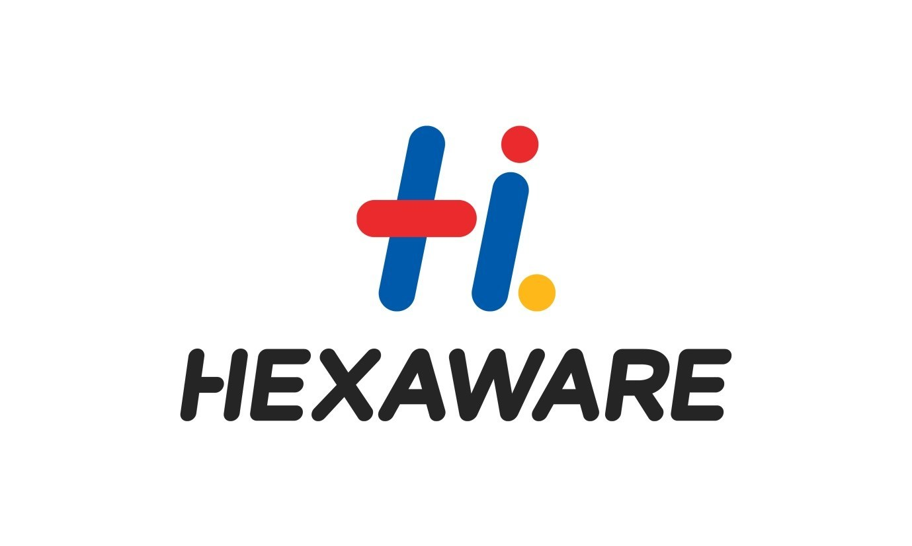

Experience
Aug 2022 - Present
Part-Time Academic Tutor
St Mark's College
Subjects Taught:- Computer Science, IT, Data Science, Mathematics
- Provided tutoring services in computer science, IT, data science, and mathematics to a diverse group of students from the University of Adelaide, Flinders University, and University of South Australia, significantly boosting technical proficiency in data science and IT subjects.
- Mentored students in data analytics, machine learning, and programming assignments, leading to High Distinction grades by improving understanding and application of key concepts.
Jan 2019 - May 2022
Data Analyst
Sidma Pest Solutions

Technologies:- SQL, Database Management, ETL, Data Migration, Tableau.
- Designed SQL databases and optimized data queries, revitalizing service delivery and strategic planning by 30%.
- Spearheaded the migration of complex datasets from legacy systems to modern cloud-based environments, boosting operational efficiency by 25%.
- Conceptualized interactive dashboards using Tableau, enabling real-time data visualization and empowering management decision-making processes.
Jun 2017- Aug 2017
Data Analyst Intern
Hexaware Technologies

Technologies:- Microsoft .NET Framework, Microsoft LUIS, Microsoft Azure,Data Analytics, AI, NLP
- Established and deployed two chat-bots on the Azure platform using Microsoft .NET Framework, improving user interaction and information retrieval through natural language processing (NLP) techniques.
- Built a rule-based chat-bot and an AI-driven chat-bot utilising Microsoft LUIS (Language Understanding Intelligent Service), using machine learning to interpret and respond to user queries related to college courses.
- Hosted and integrated the chat-bots on the Skype platform, streamlining course-related queries and improving user engage- ment through AI-powered solutions.